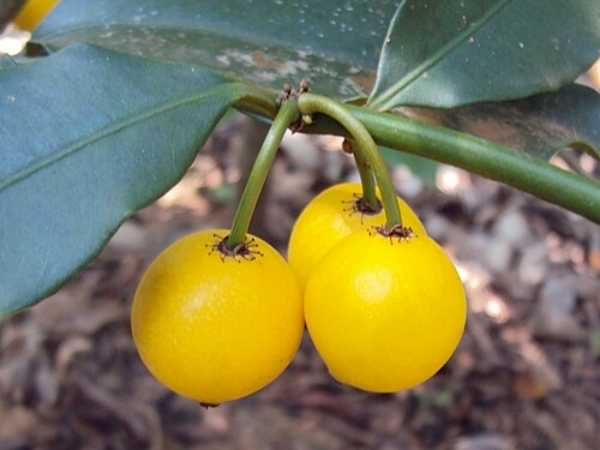

Garcinia intermedia
Common Names: Baraba, Lemon Drop Mangosteen, Monkey Fruit, Mameyito
Local Name: Mameyito (Spanish), Baraba
Family: Clusiaceae (Guttiferae)
Origin: Central America, Southern Mexico, Caribbean, Northern South America
Plant Type: Perennial evergreen tree
Variety: Species type — small yellow fruit with sweet-tart mangosteen-like flavour
Average Lifespan: 30–50+ years
| Growth Habit | Slow-growing, columnar to pyramidal evergreen tree; dense dark foliage |
| Plant Size | 5–12 meters tall; narrow canopy 3–5 meters wide |
| Leaves | Opposite, elliptic, 8–15 cm long, thick leathery, dark glossy green; exude yellow latex when broken |
| Flowers | Small, greenish-white to cream, 5–8 mm across; borne in clusters along branches |
| Flower Characteristics | Dioecious (separate male and female trees) or polygamous; inconspicuous but fragrant |
| Fruit | Oval to round, 2–4 cm long; thin smooth skin, white translucent pulp with sweet-tart lemon-mangosteen flavour |
| Fruit Color | Green turning bright yellow to orange-yellow when ripe |
| Seed Characteristics | 1–2 large seeds per fruit; recalcitrant (must be planted fresh) |
| Root System | Deep taproot; non-invasive; slow to establish |
| Climate | Tropical to warm subtropical; frost-sensitive |
| Temperature Range | 20–35°C ideal; does not tolerate frost; prefers warm humid conditions |
| Rainfall Requirement | 1200–3000 mm annually; prefers consistent moisture |
| Soil Type | Rich, well-drained loamy soil; high organic matter; tolerates limestone soils |
| Soil pH Preference | 5.5–7.5 |
| Sun Requirement | Partial shade when young; full sun to partial shade when mature |
| Spacing | 4–6 meters between trees |
| Irrigation Method | Regular watering; drip irrigation; maintain consistent moisture |
| Water Requirement | Moderate to high; does not tolerate prolonged drought |
| Can it Grow in Pots? | Yes, when young (30+ liters); slow growth suits containers; needs eventual ground planting |
| Fertilizer Schedule | 3–4 times per year during growing season; slow-release preferred |
| Recommended Organic Fertilizers | Compost, well-rotted manure, fish emulsion, seaweed extract |
| Pesticide Frequency | Rarely needed; generally pest-free |
| Recommended Organic Pesticides | Neem oil for occasional scale; fruit fly traps |
| Mulching Practice | Thick organic mulch to retain moisture and mimic forest floor |
| Training System | Natural columnar form; minimal training needed |
| Pruning Time | After fruiting; minimal pruning required |
| How to Prune | Remove dead branches; light shaping if desired; slow growth means infrequent pruning |
| Common Pests | Fruit fly, birds, occasional scale insects |
| Common Diseases | Generally disease-free; root rot in waterlogged conditions |
| Disease Prevention & Remedies | Good drainage essential; avoid waterlogging; minimal intervention needed |
| Flowering Months | Spring to early summer; may flower multiple times in tropics |
| Fruiting Season | Summer to autumn; 2–3 months after flowering |
| Days to Harvest | 60–90 days from flowering |
| Harvest Indicators | Fruit turns bright yellow; softens slightly; sweet-tart aroma; falls when ripe |
| Average Yield per Plant | 5–20 kg per tree per year (mature); prolific bearer |
| Pollination Type | Dioecious or polygamous; may need male and female trees |
| Pollination Notes | Some trees are self-fertile; planting multiple trees improves fruit set; insects pollinate |
| Pollination Details | Variable sexuality; some trees produce fruit without cross-pollination; insects are pollinators |
| Propagation by Seeds | Fresh seeds germinate in 3–6 weeks; recalcitrant — must be planted immediately; seedlings fruit in 5–8 years |
| Propagation by Cuttings | Difficult; air layering more successful than cuttings |
| Propagation by Grafting | Veneer or approach grafting on Garcinia rootstock; ensures sex and quality |
| Water Usage | Moderate; adapted to tropical rainfall patterns |
| Soil Conservation Practices | Deep taproot stabilizes soil; dense canopy reduces erosion |
| Organic Practices Used | Low-input species; minimal pest and disease management needed |
| Companion Plants | Other tropical fruit trees, shade-tolerant understory plants |
| Biodiversity Benefits | Fruit eaten by monkeys, birds, and bats; supports tropical forest biodiversity |
| Commercial Production Regions | Central America, Caribbean, Florida (USA); niche rare fruit market |
| Market Uses | Fresh fruit, ornamental tree, rare fruit collections |
| Processing Uses | Fresh eating, juice, jams; potential for commercial processing |
| Market Value (Approx.) | ₹300–700 per kg (rare fruit premium); highly sought by collectors |
| Symbolism | Known as "Lemon Drop Mangosteen" for its unique flavour profile; prized in rare fruit circles |
| Traditional Uses | Fruit eaten fresh by indigenous communities in Central America; yellow latex from bark used traditionally |
| Calories | 45 kcal per 100g (estimated) |
| Dietary Fiber | 1.5 g per 100g |
| Vitamin C | Moderate levels |
| Vitamin A | Present (carotenoids in yellow flesh) |
| Iron | Trace amounts |
| Potassium | Present |
| Antioxidants | Xanthones (characteristic of Garcinia genus), phenolic compounds, flavonoids |
| Other Key Nutrients | Calcium, phosphorus, organic acids |
| Anxiety & Sleep | Not a primary medicinal use |
| Immune Support | Xanthones and antioxidants support general health (similar to mangosteen) |
| Anti-inflammatory Properties | Garcinia xanthones show anti-inflammatory properties in research |
| Heart Health | Antioxidant compounds may support cardiovascular health |
| Digestive Health | Fruit acids aid digestion; bark latex used traditionally for intestinal complaints |
Disclaimer: Information provided is for educational purposes only and not a substitute for medical advice.
Add your field observations here.